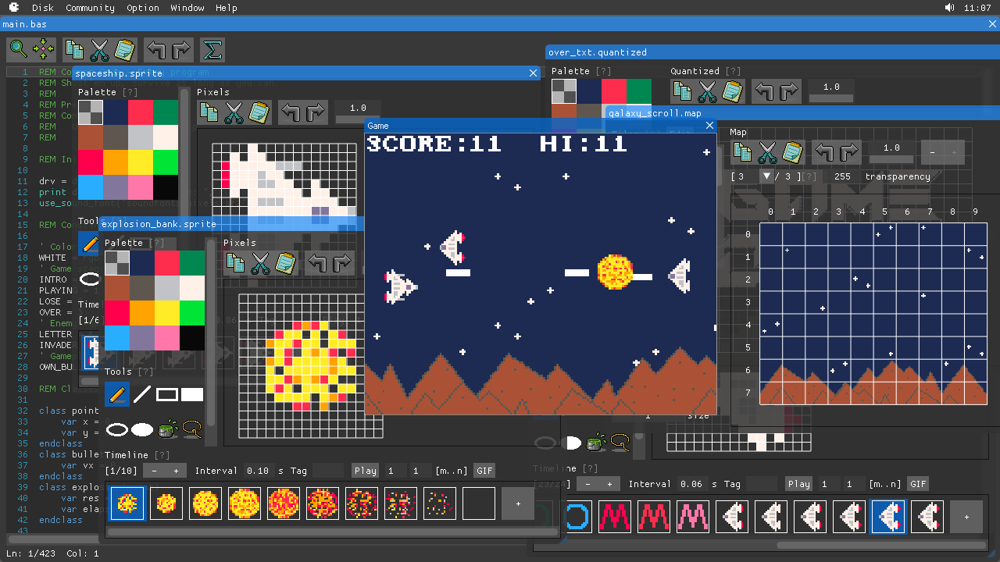
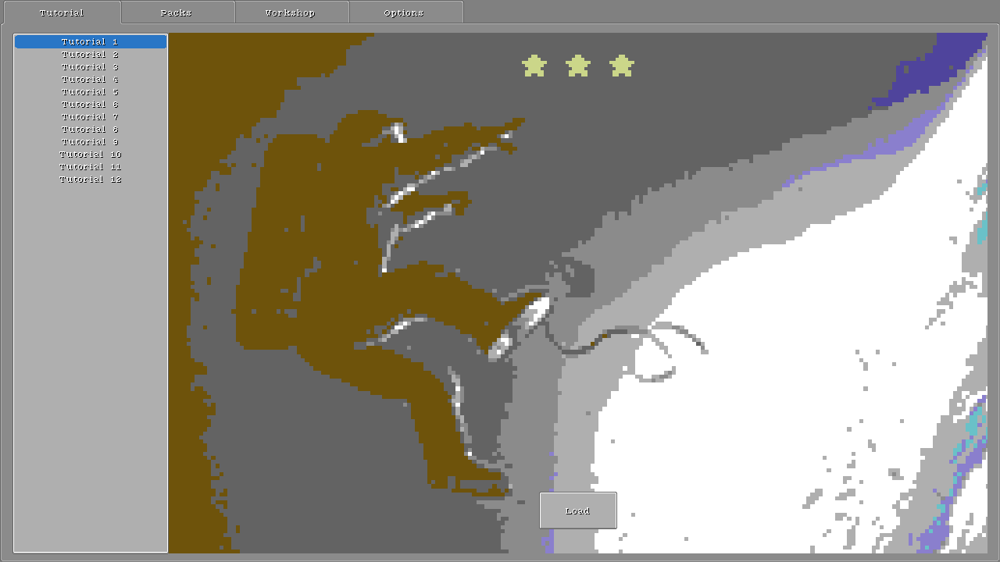
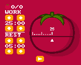

Tony Wang
Steam | Itch | Twitter | GitHub
As an independent developer, I make video games and development tools. Here are some of my creations.
Creative kits

BASIC8 - An integrated Fantasy Computer for game and other program development. You can create, share and play disks in a modern BASIC dialect, with built-in tools for editing sprite, tiles, map, quantized, etc.

Crapht Box - A Fantasy Physics Sandbox, inspired by the Fantasy Console genre. It brings a simulated world with a number of disks and tools, and leaves you to play, program, create and share disks.
Tiny games and programs

Canned Monsters - Procedurally generated monsters in a sardines can.

Dice - A 3D dice program.

Tomato Garden - A Pomodoro time management application.

Capsule Rush - Match-three to eliminate virus.